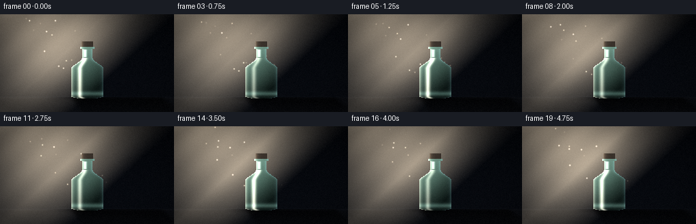
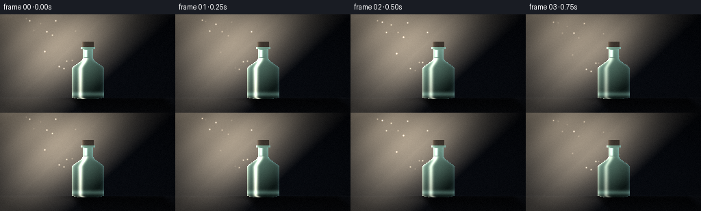

CODING AGENTS AS PIXEL WORLD MODELS
traex/Seed-2.1-Pro-0915 · phygen_043
点击播放 · 原生 RGB 像素
逐轮保存的候选
回放视频、检查图与代码变化。
每份候选均可单独播放。实际图片检查记录在下方工具轨迹中。
候选 01播放与检查图
点击播放 · 原生 RGB 像素


展开代码变化
--- 上一保存版本
+++ 本次保存版本
@@ -0,0 +1,239 @@
+"""
+Text-to-video: a diagonal ray of light onto a glass bottle in the dark,
+with the bottle's shadow projected on the floor.
+
+Pure numpy/PIL analytical rendering:
+ - volumetric diagonal light shaft (gaussian cone + shimmer + flicker)
+ - glass bottle built from a half-width silhouette with fresnel rim,
+ specular streak and transmitted light
+ - shadow obtained by back-projecting floor pixels along the light ray
+ - drifting dust motes, grain and vignette for a cinematic look
+"""
+import json
+from pathlib import Path
+
+import numpy as np
+from PIL import Image, ImageFilter
+
+import artifact_io
+
+CASE_DIR = Path(__file__).parent
+SPEC = json.loads((CASE_DIR / "task_spec.json").read_text())
+W, H = SPEC["width"], SPEC["height"]
+N, FPS = SPEC["frames"], SPEC["fps"]
+
+rng = np.random.default_rng(20261111)
+
+# ---------------------------------------------------------------- coordinate grids
+xs = np.arange(W, dtype=np.float32)[None, :]
+ys = np.arange(H, dtype=np.float32)[:, None]
+X = np.broadcast_to(xs, (H, W)).copy()
+Y = np.broadcast_to(ys, (H, W)).copy()
+
+# ---------------------------------------------------------------- light geometry
+# Point light sits off-screen upper-left; the shaft axis points at the bottle.
+LX, LY = -60.0, -120.0
+axis_target = np.array([128.0, 82.0])
+axis = axis_target - np.array([LX, LY])
+axis /= np.linalg.norm(axis)
+DX_AXIS, DY_AXIS = axis
+
+VX, VY = X - LX, Y - LY
+S = VX * DX_AXIS + VY * DY_AXIS # distance along the shaft
+P = np.abs(VX * DY_AXIS - VY * DX_AXIS) # perpendicular distance to axis
+
+# ---------------------------------------------------------------- bottle silhouette
+CX = 128.0
+hw = np.zeros((H, W), dtype=np.float32)
+
+m = (Y >= 40) & (Y < 48) # cap
+hw[m] = 9.0
+m = (Y >= 48) & (Y < 51) # glass lip ring
+hw[m] = 10.5
+m = (Y >= 51) & (Y < 64) # neck
+hw[m] = 8.0
+m = (Y >= 64) & (Y < 80) # shoulder (smoothstep taper)
+u = (Y[m] - 64) / 16.0
+hw[m] = 8.0 + 16.0 * (u * u * (3 - 2 * u))
+m = (Y >= 80) & (Y < 120) # body
+hw[m] = 24.0
+m = (Y >= 120) & (Y <= 124) # rounded base
+u = (Y[m] - 120) / 4.0
+hw[m] = 24.0 * np.sqrt(np.clip(1 - u * u, 0, 1))
+
+DXB = X - CX
+bottle = np.abs(DXB) < hw
+cap = bottle & (Y < 48)
+glass = bottle & ~cap
+edge_dist = np.maximum(hw - np.abs(DXB), 0.0) # 0 at silhouette edge
+body_zone = Y >= 64
+
+FLOOR_Y = 122.0
+floor = Y >= FLOOR_Y
+
+# ---------------------------------------------------------------- projected shadow
+# A floor pixel is in shadow if the ray from the light through it crosses the
+# bottle silhouette when back-projected to the bottle's vertical span.
+shadow_mask = np.zeros((H, W), dtype=np.float32)
+bottle_rows = np.flatnonzero(bottle.any(axis=1))
+floor_rows = np.arange(int(FLOOR_Y), H)
+xx = np.arange(W, dtype=np.float32)
+for yf in floor_rows:
+ hit = np.zeros(W, dtype=bool)
+ for by in bottle_rows:
+ t = (by - LY) / (yf - LY)
+ xb = LX + t * (xx - LX)
+ xi = np.clip(np.round(xb).astype(int), 0, W - 1)
+ hit |= bottle[by, xi]
+ shadow_mask[yf] = hit.astype(np.float32)
+
+shadow_img = Image.fromarray((shadow_mask * 255).astype(np.uint8))
+shadow_blur = np.asarray(
+ shadow_img.filter(ImageFilter.GaussianBlur(radius=2.6)), dtype=np.float32
+) / 255.0
+# Shadow softens with distance from the contact point.
+depth = np.clip((Y - FLOOR_Y) / 22.0, 0, 1)
+shadow_fade = 0.92 - 0.55 * depth
+shadow_base = shadow_blur * shadow_fade * floor
+
+# Tight ambient occlusion where the bottle meets the floor.
+contact = np.exp(-0.5 * (((X - CX) / 26.0) ** 2 + ((Y - FLOOR_Y) / 3.0) ** 2)) * floor
+
+# ---------------------------------------------------------------- dust motes
+N_DUST = 38
+dust_s0 = rng.uniform(35, 295, N_DUST)
+dust_p0 = rng.uniform(-26, 26, N_DUST)
+dust_speed = rng.uniform(3.5, 9.0, N_DUST)
+dust_phase = rng.uniform(0, 2 * np.pi, N_DUST)
+dust_tw = rng.uniform(1.2, 2.6, N_DUST)
+
+# ---------------------------------------------------------------- background
+base = np.zeros((H, W, 3), dtype=np.float32)
+vert = Y / H
+base[..., 0] = 4 + 5 * vert
+base[..., 1] = 6 + 6 * vert
+base[..., 2] = 10 + 8 * vert
+# Floor is a touch lighter and warmer than the back wall.
+base[..., 0] += floor * 3.0
+base[..., 1] += floor * 2.2
+base[..., 2] += floor * 1.0
+# Faint horizon seam between wall and floor.
+horizon = np.exp(-0.5 * ((Y - FLOOR_Y) / 1.1) ** 2)
+base += horizon[..., None] * np.array([3.0, 3.5, 4.5])
+
+BEAM_RGB = np.array([255.0, 231.0, 196.0])
+TRANSMIT_RGB = np.array([175.0, 222.0, 198.0])
+
+
+def beam_intensity(t):
+ """Volumetric shaft: gaussian core + wide halo, cone spread, shimmer."""
+ width = 15.0 + 0.27 * S
+ core = np.exp(-0.5 * (P / width) ** 2)
+ halo = 0.34 * np.exp(-0.5 * (P / (width * 2.5)) ** 2)
+ longitudinal = np.clip((S - 25) / 45, 0, 1) * np.clip((305 - S) / 70, 0, 1)
+ shimmer = 1.0 + 0.055 * np.sin(S * 0.11 + t * 1.7) * np.sin(S * 0.05 - t * 0.9)
+ flicker = (
+ 0.94
+ + 0.045 * np.sin(2 * np.pi * t * 0.7)
+ + 0.02 * np.sin(2 * np.pi * 2.3 * t + 1.3)
+ )
+ return (core + halo) * longitudinal * shimmer * flicker, flicker
+
+
+def render_frame(frame_index):
+ t = frame_index / FPS
+ beam, flicker = beam_intensity(t)
+
+ out = base.copy()
+
+ # Warm shaft on the wall and floor (the floor portion reads as a light pool).
+ out += beam[..., None] * BEAM_RGB * 0.52
+
+ # Shadow darkens the lit floor; its strength tracks the light flicker.
+ shadow_alpha = np.clip(shadow_base * (0.62 + 0.18 * flicker), 0, 0.82)[..., None]
+ out *= 1.0 - shadow_alpha
+ out *= (1.0 - (contact * 0.45)[..., None])
+
+ # ---- glass bottle -------------------------------------------------------
+ rim = np.exp(-edge_dist / 2.1)
+ left_rim = rim * (DXB < 0)
+ right_rim = rim * (DXB >= 0)
+
+ # Long vertical specular streak on the lit side of the body/shoulder.
+ streak_center = -hw * 0.46
+ streak = (
+ np.exp(-0.5 * ((DXB - streak_center) / 2.3) ** 2)
+ * body_zone
+ * (0.75 + 0.25 * np.sin(2 * np.pi * t * 0.9 + 0.6))
+ )
+ # Smaller neck highlight.
+ neck_highlight = (
+ np.exp(-0.5 * ((DXB + 3.2) / 1.5) ** 2)
+ * (Y >= 52) * (Y < 63) * 0.7
+ )
+ # Thick glass base glows softly.
+ base_glow = np.exp(-0.5 * ((Y - 116.5) / 2.4) ** 2) * glass
+
+ bottle_rgb = np.zeros_like(out)
+ # Dark green-ish glass body with a faint vertical gradient.
+ interior = np.array([9.0, 19.0, 17.0]) + (Y / H * 4.0)[..., None]
+ bottle_rgb += interior
+ # Light transmitted through the glass.
+ bottle_rgb += (beam * glass)[..., None] * TRANSMIT_RGB * 0.62
+ # Fresnel-style rim lighting (warm on the lit edge, cool on the far edge).
+ bottle_rgb += (left_rim * glass)[..., None] * np.array([235.0, 222.0, 198.0]) * 0.85
+ bottle_rgb += (right_rim * glass)[..., None] * np.array([120.0, 165.0, 178.0]) * 0.4
+ # Speculars and base.
+ bottle_rgb += (streak * glass)[..., None] * np.array([255.0, 244.0, 222.0]) * 0.9
+ bottle_rgb += neck_highlight[..., None] * np.array([230.0, 235.0, 225.0])
+ bottle_rgb += (base_glow * 0.35)[..., None] * np.array([150.0, 200.0, 185.0])
+ # Cap: matte dark cork with a warm lit edge.
+ cap_rgb = np.array([30.0, 25.0, 22.0])
+ bottle_rgb[cap] = cap_rgb
+ bottle_rgb += (left_rim * cap)[..., None] * np.array([130.0, 112.0, 92.0]) * 0.9
+ bottle_rgb += (beam * cap)[..., None] * BEAM_RGB * 0.12
+
+ out = np.where(bottle[..., None], bottle_rgb, out)
+
+ # ---- dust motes inside the shaft ---------------------------------------
+ dust = np.zeros((H, W), dtype=np.float32)
+ s_pos = (dust_s0 + t * dust_speed) % 280 + 30
+ p_pos = dust_p0 + 4.0 * np.sin(t * 0.8 + dust_phase)
+ dx = s_pos * DX_AXIS - p_pos * DY_AXIS
+ dy = s_pos * DY_AXIS + p_pos * DX_AXIS
+ px = LX + dx
+ py = LY + dy
+ valid = (px >= 0) & (px < W) & (py >= 0) & (py < H)
+ for i in np.flatnonzero(valid):
+ ix, iy = int(round(px[i])), int(round(py[i]))
+ for oy in (-1, 0, 1):
+ for ox in (-1, 0, 1):
+ qx, qy = ix + ox, iy + oy
+ if 0 <= qx < W and 0 <= qy < H:
+ twinkle = 0.55 + 0.45 * np.sin(2 * np.pi * t * dust_tw[i] + dust_phase[i])
+ dust[qy, qx] += (
+ twinkle
+ * np.exp(-(ox * ox + oy * oy) / 0.9)
+ * beam[iy, ix]
+ )
+ dust = np.where(bottle, 0.0, dust)
+ out += dust[..., None] * BEAM_RGB * 0.8
+
+ # ---- grade: vignette + grain -------------------------------------------
+ nx = (X - W / 2) / (W / 2)
+ ny = (Y - H / 2) / (H / 2)
+ vignette = 1.0 - 0.34 * np.clip(nx * nx + ny * ny, 0, 1.6) / 1.6
+ out *= vignette[..., None]
+ out += rng.normal(0, 1.6, (H, W, 1))
+
+ return np.clip(out, 0, 255).astype(np.uint8)
+
+
+def main():
+ frames = np.stack([render_frame(i) for i in range(N)], axis=0)
+ artifact_io.save(frames, CASE_DIR)
+ print(f"saved {frames.shape} to {CASE_DIR}")
+
+
+if __name__ == "__main__":
+ main()
可观测工具轨迹
实际执行的命令与返回图片。
命令 1exit 0
/bin/bash -lc 'ls -la && cat prompt.txt && echo "=====" && cat GENERATION_RULES.md && echo "=====" && cat task_spec.json'
命令 2exit 0
/bin/bash -lc 'cat artifact_io.py && echo "=====" && cat player_template.html'
命令 3exit 0
/bin/bash -lc 'cd . && python generate.py && ls -la'
保存候选 1 份；完成命令 3 次；可验证图片返回 0 张。原始 API 响应与完整日志保留在本地。